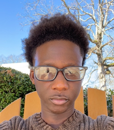

INDY-9 RED: MyFoodScan
Team Members

Ibrahima Gueye
Jedae Lisbon
Bri Noel

Victoria Kuswita
Abstract
MyFoodScan is a mobile app that enables users to scan barcodes of various food and drink items to ensure they are in compliance with their specific dietary needs. Individuals utilize this application to make a customized profile based on diet, such as vegan, vegetarian, dairy-free, allergies, etc. MyFoodScan promotes compliance with dietary limitations. The application was developed with React Native, Expo Go, Google Firebase, using the React Native Camera for barcode scanning. The OpenFoodFacts API database is used for product information. The goal of this application is to enhance awareness and safety for various dietary needs and monitor dietary restrictions.